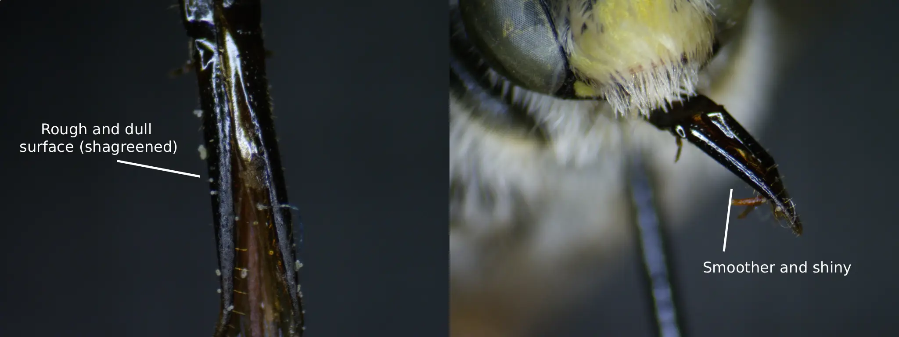
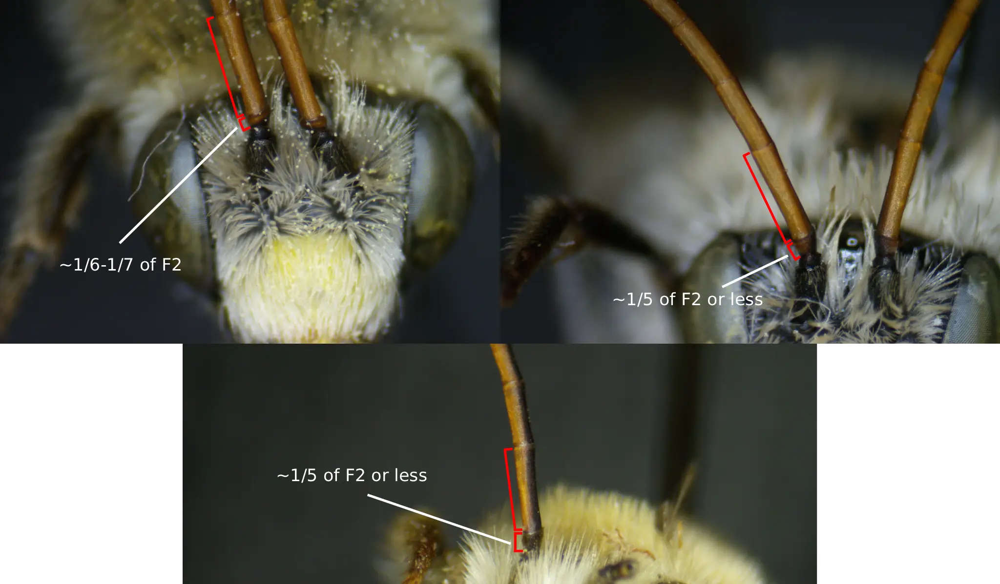
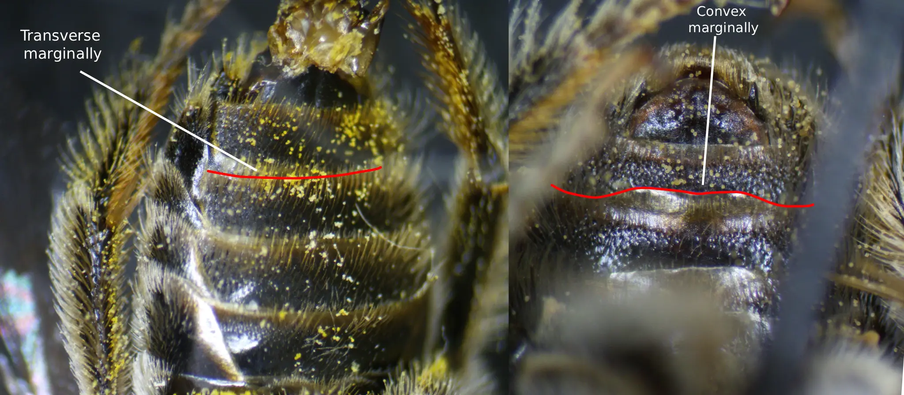
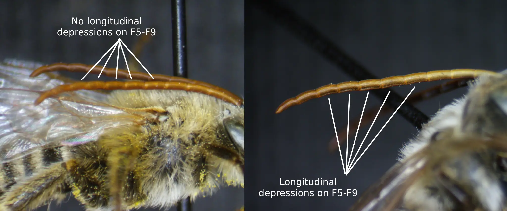
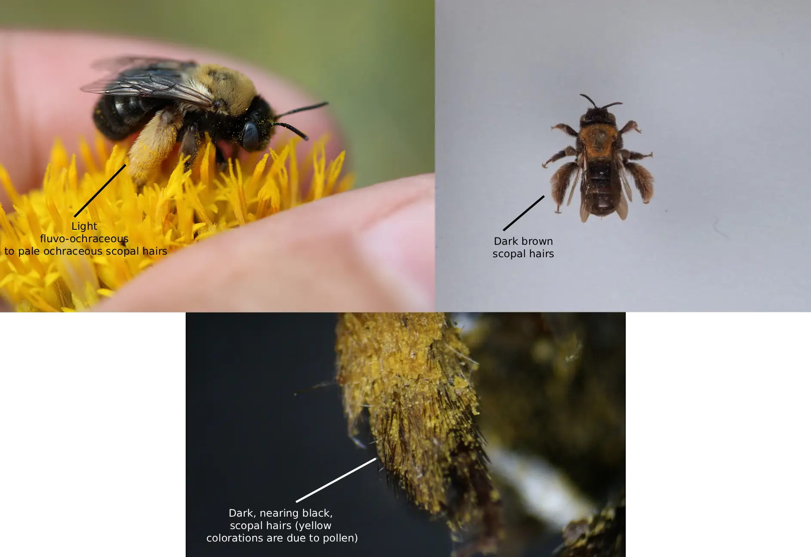

Introduction
Melissodes Latreille is a common genus of wild bees from the tribe Eucerini occurring in the New World (Laberge, 1956a; Laberge, 1956b; Laberge, 1961; Wright et al., 2020). As of now, a total of 129 species have been described in this genus making it the second largest in the Eucerini tribe (Wright et al., 2020). 25 of these species have been documented in Oregon (see table 1) and 8 have known ranges that overlap portions of Oregon (see table 2). Melissodes are known to be important pollinators in crops such as cotton (LaBerge, 1956), alfalfa (LaBerge, 1956), muskmelons (Winfree, et al., 2007), watermelon (Campbell et al., 2018; Winfree, et al., 2007), canola (O'Brien & Arathi, 2018), and coffee (Ngo et al., 2013), but most chiefly so in sunflowers (Parker et al., 1981). Parker (1981) documented that a species of Melissodes (M. agilis) is a more proficient pollinator in sunflowers than that of the western honeybee. Although their importance has been expressed in agricultural settings (Parker, 1981) and likely in wild ecosystems due to their abundance (Laberge, 1956a), identification of Melissodes beyond genus is often scarce due to the subtle characters that differentiate between species. The genus was last revised in a three-part series by W. E. Laberge (1956a; 1956b; 1961) as well as a later correction to the M. (Callimelissodes) subgeneric key (Laberge, 1963), in which detailed species-specific treatments, generic and subgeneric keys, and distributions were first presented, representing a cornerstone for current-day Melissodes knowledge. However, the keys presented in these revisions can be, at times, slightly ambiguous and overwhelming due to the sheer number of species and intraspecific variation. As a genus, Melissodes are widespread and range over the entirety of the New World, but species differ largely in what areas they occupy (Laberge, 1956a; Laberge, 1956b; Laberge, 1961; Wright et al., 2020). Many species are restricted to South America and Central America, which, when trying to identify North American species using a key designed to include all 129 species, drastically inflates the amount of information needed to identify an individual. The same can be said for species whose ranges are restricted to specific portions of North America that differ from the location in which a specific individual was found. Herein, a key developed from that of Laberge (1956a; 1956b; 1961; 1963) using the same structure and traits but incorporating subgeneric splits and only including species who occur, or are likely to occur, in Oregon is presented. Although using a regional key such as this may not yield new state records for Oregon, apart from those whose ranges overlap this area and are included in the key, it may assist in ease of identification beyond genus allowing for species-level studies and less chances for drastic misidentification due to individual variation. Along with this, species descriptions and comparisons, derived from that of Laberge, (1956a; 1956b; 1961) are given to further aid in identification.
Table 1. A table of Melissodes species with their citations to the resource which documents their occurance in Oregon.
| Species | Citations |
|---|---|
| Melissodes agilis | (Laberge, 1961; Ikerd, 2019; Johnson, 2020; Best et al., 2022a; McElrath, 2023) |
| Melissodes ablusus | (DeBano et al.) |
| Melissodes bimatris | (Laberge, 1961; Ikerd, 2019; Johnson, 2020; McElrath, 2023; Bentley & Osborn, 2025) |
| Melissodes clarkiae | (Laberge, 1961; Best et al., 2022a; Bentley & Osborn, 2025) |
| Melissodes communis | (Laberge, 1956a; Ikerd, 2019; Johnson, 2020; Best et al., 2022a; Bentley & Osborn, 2025; iBOL, 2025) |
| Melissodes dagosus | (Laberge, 1956b; Ikerd, 2019; McElrath, 2023; Bentley & Osborn, 2025) |
| Melissodes glenwoodensis | (Laberge, 1961; Ikerd, 2019; McElrath, 2023; Bentley & Osborn, 2025) |
| Melissodes lupinus | (Laberge, 1961; Ikerd, 2019; Johnson, 2020; Best et al., 2022a; McElrath, 2023; Bentley & Osborn, 2025; iBOL, 2025) |
| Melissodes lustrus | (Laberge, 1961; Ikerd, 2019; Johnson, 2020; Best et al., 2022a; McElrath, 2023; Bentley & Osborn, 2025) |
| Melissodes lutulentus | (Laberge, 1961; Ikerd, 2019; McElrath, 2023; Bentley & Osborn, 2025) |
| Melissodes menuachus | (Laberge, 1961; Ikerd, 2019; McElrath, 2023) |
| Melissodes metenuus | (Laberge, 1961; Ikerd, 2019; Johnson, 2020; Best et al., 2022a; McElrath, 2023; Bentley & Osborn, 2025) |
| Melissodes microstictus | (Laberge, 1961; Johnson, 2020; Best et al., 2022a; Ikerd & Engler, 2023; McElrath, 2023; Bentley & Osborn, 2025; iBOL, 2025) |
| Melissodes pallidisignatus | (Laberge, 1961; Ikerd, 2019; Johnson, 2020; Best et al., 2022a; McElrath, 2023; Bentley & Osborn, 2025) |
| Melissodes paululus | (Ikerd, 2019) Note, Laberge (1961) had Oregon within M. paululus’ range, just none had been collected. |
| Melissodes plumosus | (Laberge, 1961; Ikerd, 2019) Note, likely the same specimen. |
| Melissodes pullatellus | (Laberge, 1961; Ikerd, 2019) Note, likely the same specimen. |
| Melissodes rivalis | (Laberge, 1956b; Ikerd, 2019; Johnson, 2020; Best et al., 2022a; McElrath, 2023; Bentley & Osborn, 2025; iBOL, 2025) |
| Melissodes robustior | (Laberge, 1961; Ikerd, 2019; Best et al., 2022a; McElrath, 2023; Bentley & Osborn, 2025; iBOL, 2025) |
| Melissodes saponellus | (Laberge, 1961) |
| Melissodes semilupinus | (Laberge, 1961; Ikerd, 2019; Johnson, 2020; McElrath, 2023; Bentley & Osborn, 2025) |
| Melissodes stearnsi | (Laberge, 1961; Bentley & Osborn, 2025) |
| Melissodes subagilis | (Laberge, 1961; Ikerd, 2019; Johnson, 2020; McElrath, 2023) |
| Melissodes tepidus | (Laberge, 1956a; Ikerd, 2019; McElrath, 2023; Bentley & Osborn, 2025) |
| Melissodes tristis | (Ikerd, 2019) |
| Melissodes verbesinarum | (Laberge, 1961) |
Table 2. A table of Melissodes species with their citations to the resource which documents their ranges which overlap Oregon (i.e. species with a likely occurance in Oregon that have yet to be documented).
| Species | Citations |
|---|---|
| Melissodes bicoloratus | (Ikerd & Engler, 2023) |
| Melissodes compositus | (Ikerd, 2019) |
| Melissodes druriellus | (Ikerd & Engler, 2023) |
| Melissodes grindeliae | (Laberge, 1961) |
| Melissodes minusculus | (Ikerd, 2019) |
| Melissodes nigracauda | (Washington State Department of Agriculture, 2025). |
| Melissodes utahensis | (McElrath, 2023) |
| Melissodes vernalis | (Laberge, 1961) |
How to use this resource
This field guide is designed to aid in identifying Melissodes species in Oregon. This includes comparisons of similar genera such as Eucera and Diadasia, which have overlapping ranges and similar morphologies, comparisons of similar species within the genus, and regional keys. Ranges have been determined using historic taxonomic literature in tandem with GBIF occurrence records (see tables 1 & 2). This data was also used to evaluate distributions, phenology, and host-plant relationships. Each species has a full treatment used to assist in identification, locality, morphology, and more (species treatments are outlined below).
Species treatments
Each species description consists of what follows: Morphological descriptions, particularly of key diagnostic features with accompanying photos of the feature; distribution maps plotted in Leaflet using OpenStreetMap (OSM) derived from authoritative taxonomic literature (Laberge, 1956a; 1956b; 1961) and recent sampling from GBIF occurrence records to produce an up-to-date range; phenological graphs created using data from GBIF occurrence records; flower records and/or preference if lists are too extensive; when applicable, notes concerning taxonomic history and/or distinctive identifiers; two "Feild Marks" and "Similar species" sections (one per sex given the sexual diamorphism) unless stated otherwise; a similar naming convention to that used by the North American Native Bee Collaborative (2020) will be adapted for this guide, that being at the beginning of each species treatment, a group-name is given to species of similar morphologies (if a group-name is absent, then the species does not specifically resemble another and instead, the word “distinct” will take the place of group-name). For most species, as there is insufficient data, phenological graphs will consist of two lines, one representing phenology based on Oregon captures, and the other based on captures across each species respective range. Each species "Field Markers" section is based on the information given about both sexes from the genus treatment; if not familiar with Melissodes as a genus, reading the genus treatment is recomended before subsequent species treatments. Morphological descriptions for each species are derived from that of Laberge (1956a; 1956b; 1961). Precursing each of the species treatments, the genus will be treated. This will not include a group-name as no other genera are described within this guide; similar genera will be listed instead.
Reference Images
As can be determined below, subtle differences are used in delimiting species of Melissodes. To describe these delimiting characters, terms have been applied to specific anatomical features and structures. Below is a list of Melissodes images with labeled anatomical features, the terms used to describe these features will be used throughout the guide; definitions for these terms are also in the glossary with parenthesized use cases.

Fig. 1. Fig. 1. An illustration of the dorsal metasomal structure of a female Melissodes that has been redrawn and relabeled from that of Laberge (1956a). Only the first tergum is regionally labeled, but T2-T6 follow the same patterns (male Melissodes have 7 terga). Originally presented as "Fig. 20. Diagram of metasoma (approximately X 11) of M. communis showing areas of vestiture. Regional terms are on the left and descriptive terms referring to vestiture are on the right. Similar types of shading indicate similar types of pilosity."

Fig. 2. Diagrams representing the facial anatomy of a Melissodes. Photo credits: Christopher Wilson.

Fig. 3. Diagrams representing the thoracic anatomy of a Melissodes. Photo credits: Christopher Wilson.

Fig. 4. Diagrams representing the leg anatomy of a Melissodes. One diagram per sex is given due to their sexual diamorphism.

Fig. 5. Wings of a Melissodes (cells shown by capital letters). Cells: A, anal; D, discoidal: MC, marginal; MD, median; SM, submarginal; SMD, submedian.

Fig. 6. Labeled images illustrating the ventral structure of a Male Melissodes' metasoma. The sterna are labeled S1-S6; note that this is a male, females have only 5 sterna.
Identification
Because of their sexual diamorphism, two keys for the species of the genus Melissodes in Oregon are listed below (male and female keys). These keys are developed from those of Laberge (1956a; 1956b; 1961; 1963), but include subgeneric splits and only Melissodes that are known to inhabit, or have ranges that overlap, Oregon. If a couplet regarding a certain character seems ambiguous, check morphologically similar species in their respective treatments.
Key to the bees of the genus Melissodes in Oregon
Males
1. The fourth sternum and often third sternum’s posterior margins are either widely convex, or developed into a thin, broad, colorless hyaline flap. Go to 2
The fourth and third sterna’s posterior margins are either straight or slightly concave, but either way, they never develop into a flap. Go to 12
2. (1) The fourth sternum’s posterior apical area is developed into a thin, broad, colorless hyaline flap that’s the same length of the rest of the sternum medially and is medley weakly emarginate. The second sternum is widely convex and the apical area is hyaline. The third sternum has a hyaline, bilobed, wide flap that is similar to the second sternum, although the flap is shorter. The fifth sternum is the same as the second. The clypeus is usually white to cream-colored and on rare occasions, sometimes pale yellow ... stearnsi
The fourth sternum’s posterior apical area isn’t developed into a thin, broad, colorless hyaline flap, but it is widely convex and weakly medially emarginate. Sterna two and five have faintly convex to straight apical margins and the third sternum has a convex to nearing straight apical margin. The clypeus is yellow, cream-colored, or white. Go to 3
3. (2) F4-F10 have longitudinal depressions on the outer surface that are shallow, narrow, and shiny. Usually, F3 and F11 have partially developed depressions as well. Go to 5
F5-F9 have longitudinal depressions on the outer surface that are shallow, narrow, and shiny. At most, F10 also has a developed depression, however F11 does not. Go to 4
4. (3) The first flagellar segment’s minimum length is more than one-fourth of the second segment’s maximum length. The flagellum has no segments that have shallow narrow depressions laterally. However, the flagellar segments might have some flattened areas. The galeae are matte and dulled dorsally due to regular, dense tessellation ... nigracauda
The first flagellar segment’s minimum length is less than, or equal to, one-fourth of the second segment’s maximum length. The galeae are usually shiny to dull dorsally. However, if the galeae are dull, then F1 is less than one-fourth of F2. There are at least a few flagellar segments that have shallow, narrow, longitudinal depressions on the lateral areas. Go to 9
5. (3) The length of the penultimate flagellar segment is two times its width or less. Go to 6
The length of the penultimate flagellar segment is longer than two times its width. Go to 8
6. (5) The galeae are matte and dull dorsally due to coarse, dense, and regular tessellation. The first flagellar segment’s minimum length is less than one-fifth of the second segment’s maximum length. Go to 7
The galeae are somewhat shiny to shiny dorsally but faintly dulled due to delicate reticular shagreening; the surface has no tessellation. F1’s minimum length is more than one-fifth of F2’s maximum length ... clarkiae
7. (6) The hairs on the sixth and seventh terga are mostly brown and the hairs on the basal half terga 3-5 are mostly brown as well … ablusus
The hairs on the sixth and seventh terga are white to gold-colored and the hairs on the basal half of terga 3-5 are pale brown to ochraceous … minusculus
8. (5) The apical areas of the second and third terga have simple, erect to suberect hairs and the galeae are often shiny without shagreening or delicately reticularly shagreened. The third flagellar segment usually has a well defined ventrolateral depression. Go to 11
The apical areas of the second and third terga are glabrous and the galeae are often shagreened dorsally. The third flagellar segment usually does not have, or has a poorly defined and short, ventrolateral depression. Go to 10.
9. (4) The apical areas of the second and third terga have suberect hairs and the galeae are often dull due to dense shagreening. The first flagellar segment’s minimum length is usually less than one-fifth of the second segment’s maximum length ... lupinus
The apical areas of the second and third terga are glabrous as well as impunctate and the galeae are either shiny or dull due to shagreening. The first flagellar segment’s minimum length is usually less than, or equal to, one-fifth of the second segment’s maximum length ... glenwoodensis
10. (8) The interband zones of the second and third terga have round, deep, abundant punctures that are mostly separated by noticeably less than a single puncture diameter. The eyes are often greenish blue to blue … compositus
The interband zone of the third tergum, and usually the second as well, have their punctures that are mostly separated by one puncture diameter, and several that are separated by 2 to 3 puncture diameters. The eyes are often yellowish green to green … lustrus
11. (8) The galeae are dorsally shiny and unshagreened, or if shagreened, then delicately so on less than, or equal to, the apical half. Sterna 2-4 are medially shiny and are delicately reticularly shagreened. The clypeus is coarsely punctate basally ... metenuus
The galeae are somewhat dull dorsally due to delicate distinct shagreening. Sterna 2-4 are only moderately shiny medially due to shagreening. The clypeus has small round basal punctures ... plumosus
12. (1) The first flagellar segment’s maximum length is approximately 0.4 times or more the maximum length of the second segment and the clypeus is distinctly protuberant, protruding beyond the eye by three-fourths of an eye's width in profile or more ... rivalis
The clypeus is usually protruding beyond the eye by three-fourths of an eye's width in profile or less or if it is, then the first flagellar segment’s maximum length is less than 0.4 times the maximum length of the second. Go to 13
13. (12) The first flagellar segment’s minimum length is notably longer than half the
second segment’s maximum length, the pubescent bands on terga 2-5 are apical, and the
pubescent bands on terga 2-5 are approximately the same width across each respective
terga (not widening or narrowing) and each tergal band is approximately the same width as the other tergal bands ... dagosus
The first flagellar segment’s minimum length is equal to, or shorter than half
the second segment’s maximum length, the pubescent bands on terga 2-4 aren’t usually
apical, and the pubescent bands on terga 2-4 aren’t usually the same width across each
respective terga (not widening or narrowing) and each tergal band isn’t usually the same
width as the other tergal bands. These bands are often subapical and interrupted medially. Go to 14
14. (13) Terga 2-5 do not have any pale pubescent bands, or if there are pale pubescent bands,
then they are all interrupted medially. However, if one or two of the pubescent bands are complete,
then the labrum is almost, or entirely, pale or the thoracic hairs are mostly black to black and white mixed. Go to 16
Terga 2-5 usually have complete pale bands and on occasion one or more are interrupted. If there
are only one or two complete bands, then the labrum is mostly, or all, black and thoracic hairs
are bright rusty-red. Go to 15
15. (14) The last two tera have black to dark brown hairs. The labrum is entirely pale
and the mandibles often have basal yellow macula. Go to 16
The last two terga only have pale hairs, or the labrum minimally is dark marginally
and the mandibles usually do not have basal pale macula, or both of these two traits combined (mandibles can have maculations). Go to 17
16. (14 or 15) The second tergum’s wide distal pale band is equal to, or
almost equals, the medial portion of the apical area. The fourth tergum’s wide
pale band is more than, or equal to, fourth times the medial portion of the apical area ... tepidus
The second tergum’s distal band is narrow and equal to, or less than, one-half
the width of the medial portion of the apical area. If the second tergum’s distal
band is, or almost is, as wide as the medial portion of the apical area, then the
fourth tergum’s pale band is clearly narrower than fourth times the medial portion of the apical area ... communis
17. (15) The labrum is entirely light-colored and has no brown apical margin. The mandibles have a large pale spot at their bases ... verbesinarum (in part)
The labrum usually has some dark colorations on its margin and the mandibles usually don’t have large basal pale spots. Go to 18
18. (17) The length of the penultimate flagellar segment is less than three times its width (maximum length and narrowest width) and the antennae does not surpass the pterostigma in repose. Go to 19
The length of the penultimate flagellar segment is equal to or more than, three times its width (maximum length and narrowest width) and/or the antennae surpass the pterostigma in repose. Go to 22
19. (18) The labrum and the mandibles are black and have no yellow maculations. When in repose, the antennae reach the pterostigma ... grindeliae (in part)
The labrum and usually the mandibles have some form of yellow maculations (mandibles can still be black but the labrum always has a macula). When in repose, the antennae usually do not reach the pterostigma. Go to 20
20. (19) The mandibular bases have yellow maculations ... pallidisignatus (in part)
The mandibular bases do not have yellow maculations. Go to 21
21. (20) The apical areas of terga 2-5 are opaque with a deep brownish red color. The basal areas of terga 4-6 are covered in reddish brown pubescence and hairs ... druriellus (in part)
The apical areas of terga 2-5 are colorless to testaceous or brownish yellow hyaline. The basa; areas of terga 4-6 are covered in pale pubescence and hairs ... pallidisignatus (in part)
22. (18) The apical areas of the terga are completely, or almost completely, opaque (deeply infumate) and the clypeus is completely yellow apart from the tentorial depressions and apical margin ... druriellus (in part)
The apical areas of the terga are colorless hyaline or slightly infumate and translucent but not opaque. If the apical areas of the terga are, or almost are, opaque, then the clypeus is either partially or entirely black. Go to 23
23. (22) The first flagellar segment’s maximum length is more than one-third of the third segment’s minimum length. Go to 24
The first flagellar segment’s maximum length is less than, or equal to, one-third of the third segment’s minimum length. Go to 28
24. (23) The first tergum has an obvious and well developed distal band consisting of appressed or subappressed,
dense, white pubescence that reaches and obscures the apical margin across the entire tergum (sometimes the apical band is worn). Go to 25
The first tergum doesn't have an obvious apical band of white, dense, hairs that obscure the apical margin, or
if there are dense apical hairs present, then they only occur on the lateral areas and are equal to, or less than,
one-third of the width of the entire tergum. If there is an apical band across the entire tergum, then it doesn’t medially obscure the apical area. Go to 26
25. (24) The mandibular bases have a yellow macula and the labrum is mostly yellow and has a darkened border. The first flagellar
segment’s minimum length is usually more than, or equal to, one-third of the third segment’s maximum length ... semilupinus
The mandibular bases are black with no yellow maculations and the labrum is completely black, or sometimes has a small mediobasal
pale macula. The first flagellar segment’s minimum length is usually less than one-third of the third segment’s maximum length ... bimatris
26. (24) The mandibular bases usually do not have a pale macula, or if there is a pale macula, then the scutellar and mesoscutal hairs are medially black. The galeae are dull due to dense shagreening ... robustior
The mandibular bases usually have a yellow macula and the mesoscutal hairs aren’t dark brown or black, or the galeae are shiny and not shagreened. Go to 27
27. (24) The labrum and bases of the mandibles are yellow and the mesoscutal and scutellar hairs aren’t dark medially ... menuachus (in part)
The labrum and the bases of the mandibles have no pale maculations and the mesoscutal and scutellar hairs are abundantly dark medially ... grindeliae (in part)
28. (23) The clypeus is entirely, or at least partially, black. Go to 29
The clypeus is entirely light excluding the dark spots denoting the tentorial depressions or the anterior notches and margin. Go to 31
29. (28) The clypeus is often partially yellow and the flagellar segments have a depressed or flattened
shiny portion laterodorsally. The galeae are unshagreened and shiny above excluding the tips. All of the terga have opaque dark reddish brown to black apical areas; not hyaline ... paululus
The clypeus is partially or entirely black and the flagellar segments have no depressed or flattened shiny
laterodorsal areas. The galeae vary in sculpture but are usually shagreened or tessellated above. All of the terga are hyaline apically. Go to 30
30. (29) The clypeus is completely black and usually has a shiny boss medially. The vestiture of the
body is usually white. The antennae are very long and the underside of flagellar segments 2-11 are red with
the last one or two flagellar segments being darker than the rest of the flagellar segments ... tristis (in part)
The clypeus usually has a yellow marking and the flagellum is entirely black excluding a small ventral pale macula ... microstictus
31. (28) The mandibular bases have a yellow macula and the labrum has a large mediobasal pale macula (at least equal to, and usually larger than, one-third of the labrum). Go to 32
The mandibular bases do not have a yellow maculation and the labrum does or does not have a mediobasal pale macula.
Rarely do both the labrum and mandibular bases have pale macula, but if so, then the macula on the labrum is less
than one-third of the area of the labrum and/or the macula on the bases of the mandibles are tiny. Also, rarely is the labrum black and the mandibular bases bearing tiny yellow macula. Go to 34
32. (31) The galeae are dulled above due to fine reticular shagreening and the wings are yellow to red. The hairs on the head and thorax are minimally pale ochraceous and often pale rusty-red ... agilis
The galeae are shiny above with no shagreening, except for the tips. If the galeae are shagreened, then the wing veins are black to brown or the thoracic and head hairs are white or white with dark brown mixed. Go to 33
33. (32) Larger bee, around 12-15 mm. long. The first flagellar segment’s maximum length is equal to, or almost equal
to, one-third of the third segment’s maximum length, and the minimum length of the first flagellar segment is notably longer than the pedicel’s length on the same side ... menuachus (in part)
Small to medium sized bee, around 8-13 mm. long. The first flagellar segment’s maximum length is much less than one-third of the
third segment’s maximum length, and the minimum length of the first flagellar segment is barely, if at all, longer than the pedicel’s length on the same side ... verbesinarum (in part)
34. (31) The punctures on the interband zone of the second tergum are extremely tiny and mostly separated by more than, or equal to,
three puncture diameters; rarely any wider than the bases of the hairs that arise from them. The interband zone punctures of the third and
fourth terga are also very tiny to small, indistinct, and shallow and mostly separated by two puncture diameters (usually separated by less on the fourth tergum). Go to 35
The punctures on the interband zone of the second tergum are larger and mostly separated by two puncture diameters or less; each
puncture is notably wider than the bases of the hairs that arise from them. The interband zones of the third and fourth terga have
large, deep, round punctures that are mostly separated by 1 puncture diameter. If the second, third, and fourth terga have tiny and largely separated punctures, then the bee is medium-sized and the wing veins are red to yellow. Go to 36
35. (34) The labrum often doesn't have a medial pale macula, or if it does, then the macula is less than one-third of the labral area.
The galeae are dull above due to dense reticular shagreening and the pygidial plate is wide, with its width about two-thirds of its length ... utahensis
The labrum has a pale macula that is more than, or equal to, one-half of the labral area. The galeae are shiny and unshagreened above
apart from the tips and the pygidial plate is often narrow, with its width often less than two-thirds of its length (usually less than one-half) ... vernalis
36. (34) The first tergum’s apical hairs are appressed, white, dense, plumose, and short creating a distinct band that reaches the apex across the entire tergum.
The second tergum’s distal pale pubescent band is at least as wide, and usually widener, than the apical area. On occasion, the mesoscutum and scutellum have brown hairs ... lutulentus
The first tergum’s apical hairs are medially sparse and/or minutely barbed and only dense and plumose laterally. The second tergum’s distal pale pubescent band
is usually narrower than the apical area. The dorsal areas of the scutellum and mesoscutum do not have dark hairs. Go to 37
37. (36) A medium-sized bee, approximately 11 mm. long and the galeae are shiny with no shagreening above apart from the tips. The apical area of the first tergum is obscured by hairs in the lateral one-thirds or faintly less but not obscuring the apical margin medially. The overall vestiture is extremely pale ochraceous to white ... bicoloratus
A smaller bee, around 9 to 11 mm. long and the galeae are often dull above due to shagreening, minimally in the apical halves and sometimes more. The apical area of the first tergum doesn’t have hairs obscuring it at lateral areas. The overall vestiture is often somewhat yellow to ochraceous ... subagilis
Females
1. In profile view, the clypeus protrudes beyond the eye by one-half to two-thirds of an eye’s width and the inner margins of the eyes are parallel to one another. The basitari’s inner surfaces have dark brown to black hairs, and the scopal hairs are usually yellowish and plumous … rivalis
In profile view, the clypeus protrudes beyond the eye by less than one-half of an eye's width. If the clypeus is protruding by one-half of an eye’s width, then the inner margins of the eyes are not parallel and instead converge toward the mandibles and/or the hind basitarsias inner surfaces have bright red to yellow hairs. The scopal hairs are sometimes branched weakly. Go to 2
2. (1) The pygidial plate is narrowly U-shaped and the scopal hairs are somewhat weakly branched, usually having one to two branches on either side of each rachis. Go to 7
The pygidial plate is often more V-shaped and has a rounded or acute apex. The scopal hairs are stronger and plumose with most consisting of three or more branches on either side of each rachis. Go to 3
3. (2) The second, third, and fourth terga have distal pale bands that are apical, approximately the same width across each terga (not narrowing or widening) and the same width to one another, and around as narrow, or narrower, than the basal dark pubescence. The hairs of these bands do not arise from noticeable punctures … dagosus
The second, third, and fourth terga, or at minimum just the second tergum, do not have distal pale bands that reach the apex across the entire tergum. If the bands reach the apex across the entire tergum, then they diffuse across it instead of making a clear apical band or the bands are much wider than that of the basal dark pubescence. Or the bands are not approximately the same width across each terga (narrowing and widening) and not the same width to one another. Or both of these combined. Go to 4
4. (3) The ultimate flagellar segment is slightly shorter than, or as wide as, its own width; approximately equal to the length of the penultimate segment. Or the bee is small, around 8-9 mm. long and have abundant long hooked galeal hairs above, or incredibly short blunt straight sparse galeal hairs and the galeae is densely regularly tessellated. Go to 7
The ultimate flagellar segment is longer than the penultimate segment and longer than it is wide. The bee is small to large, but if small, then the galeae are either not tessellated or the hairs are abundant straight and long. Never a small bee with abundant hooded galeal hairs. Go to 5
5. (4) The first tergum has sparse dorsal punctures that don’t surpass the basal one-third of the tergum medially, apart from a few widely spaced punctures. The galeae are shiny. The surfaces of the interband zones of the second and third terga are dull due to dense, fine, reticulo-transverse shagreening. The lateral portions of the thorax and propodeum have black hairs. Go to 7
The lateral areas of the thorax and propodeum have pale hairs. If the lateral areas of the thorax and propodeum have dark hairs, then the first tergum has dense punctures that reach the basal one-half or more, and/or the galeae are dull due to tessellation or shagreening. Sometimes the surfaces of the second and third terga’s interband zones are shiny with no shagreening. Go to 6
6. (5) The sixth tergum’s postgradular carina is laterally lamelliform and ends
abruptly in a blunt short denticle. The apical half of the pygidial plate is
narrow and its sides are often somewhat parallel to one another unless the plate
has been worn. The tibial plate is short and its edges show through the hair except
on the lower anterior angle and anteriorly. Go to 7
The sixth tergum’s postgradular carina usually isn’t present laterally, or at most, is only
cariniform not lamelliform and does not end in a denticle. The apical half of the pygidial plate
is not narrowed and the sides are parallel to one another; pygidial plate short and wide. The tibial
plate is larger and the edge is obscured by hairs, minimally on the anterior half of the lower area,
and sometimes more unless the hairs are worn. Go to 16
7. (2, 4, 5, 6) The galeae have abundant long hooked hairs above and the second, third, and fourth terga are largely covered in short, pale, diffused, pubescence unless worn. The fifth and sixth terga have long, dark ochraceous to ochraceous medial hairs, and long white lateral hairs … stearnsi
The galeae have rather sparse, straight, short hairs and the second, third, and fourth terga are not largely covered in short, pale, diffused, pubescence. The fifth and sixth terga usually have dark hairs, minimally medially and sometimes more. Go to 8
8. (7) The scopal hairs are somewhat weakly branched, usually having one to three branches on either side of each rachis .. clarkiae
The scopal hairs are highly branched, having more than three branches on either side of each rachis. Go to 9
9. (8) The majority of the scopal hairs are dark brown, sometimes paler brown medially, and the metasomal hairs are mostly dark brown to black (sometimes there is a small amount of paler pubescence on the second tergum). The galeae have dense tessellation … nigracauda
The majority of the scopal hairs are yellow to white and only brown near the basitibial plate apical areas of the basitarsi. The galeae have varying sculptures. Go to 10
10. (9) The ultimate flagellar segment has a truncated appearance and is around as long as it is wide … lupinus
The ultimate flagellar segment has a more obliquely truncated or rounded appearance and is notably longer than it is wide. Go to 11
11. (10) The head hairs are entirely, or almost entirely, dark brown to black and the hairs on the inner surfaces of the hind bastitarsi and often the tibiae are dark reddish brown to black. The galeae are shiny to moderately shiny above with no, or very little, faint shagreening … metenuus
The head hairs are often pale apart from the abundant darker vertex hairs and the hairs on the inner surface of the hind bastitarsi and tibiae are usually pale-colored red to yellow. If the hairs on the head are mostly dark and the hairs on the inner surface of the hind bastitarsi and tibiae are dark, then the galeae are matt and dull above due to coarse tessellation. Go to 12
12. (11) The first tergum’s crowded basal punctures are restricted to, and do not surpass the, basal third or less medially. If the medial one-third of the first tergum has punctures, then they are mostly separated by more than two puncture diameters. The galeae are moderately shiny above, and delicately reticularly shagreened, but no dense tessellation. Go to 13
The first tergum’s crowded basal punctures usually extend to the basal half medially. The medial one-third of the first tergum has punctures that are mostly separated by one puncture width or less, minimally basally and sometimes more. The galeae are moderately shiny above, and delicately reticularly shagreened to regularly and densely tessellated. Go to 15
13. (12) The hairs on the inner surfaces of the hind basitarsi are black to dark reddish brown and the scopal hairs are usually yellow. The fifth and sixth terga have black to dark brown hairs or no white lateral tufts… glenwoodensis
The hairs on the inner surfaces of the hind basitarsi are red to yellow and the scopal hairs are pale ochraceous to white. The fifth and sixth terga have golden to pale brown medial hairs and large white lateral tufts of hairs. Go to 14
14. (13) The mesoscutal punctures positioned medially from the parapsidal line are often and/or mostly larger than those of the mesepisterna or scutellum, and mostly separated by less than, or equal to, one-half of a puncture diameter … compositus
The mesoscutal punctures positioned medially from the parapsidal line are irregularly sized, often and/or mostly smaller than the majority of those on the mesepisterna or scutellum, and mostly separated by more than one-half (several separated by more than, or equal to, two) of a puncture diameter ... lustrus
15. (13) The galeae are moderately shiny above, but somewhat dull due to faint reticular shagreening, notably so in the apical half or less … plumosus
The galeae are matte and dull above due to coarse, dense, regular tessellation … ablusus
16. (6) The hairs on the ventral and lateral thoracic surfaces, including the propodeum, are dark brown. The
second and third terga’s interband zones have irregular, large, piliferous, punctures on the lateral raised areas
and the surfaces are shiny with no shagreening or tessellation. The surface of the supraclypeal area is shiny,
smooth, and not shagreened. Go to 23
The hairs on lateral surfaces of the thorax are pale at least in some
areas or the second and third terga’s interband zones are notably shagreened on the
lateral raised areas. The surface of the supraclypeal area is often somewhat dull due
to tessellation or shagreening. Go to 17
17. (16) In profile view, the eyes are narrower than the genal area. The widest portion of the eye in profile view is around less than, or equal to, half of its length. The hairs on the ventral and lateral thoracic surfaces are black. Go to 23
In profile view, the eyes are wider than, or equal to the genal area. The widest portion of the eye in profile view is usually more than half of its length, or the hairs on the lateral thoracic surfaces are entirely, or almost entirely, pale. Go to 18
18. (17) The length of the second flagellar segment is greater than its width ventrally and the hairs on the inner surfaces of the hin basitarsi are black to brown. Go to 23
The length of the second flagellar segment is less than, or equal to, its width ventrally, or the hairs on the inner surfaces of the hind basitarsi are yellow to red, or both of these combined. Go to 19
19. (18) The metasomal hairs are completely black to dark brown apart from the long basal hairs on the first tergum and sometimes a medial thin band across the second tergum. The dorsal area of the thorax has ochraceous to rufescent hairs. Go to 23
The metasomal hairs are never completely dark, except sometimes for the first and second terga, having varying arrangements and amounts of pale pubescence, or the dorsal area of the thorax has many dark hairs, or both of these combined. Go to 20
20. (19) The third tergum either has (1) its apical area covered/obscured, or nearly so, by a pale pubescent band apart from the medial triangular indentation
that is less than one-third of the tergum’s width, or (2) is apical area impuncate and apubescent which either laterally narrows from the medial indentation, or is narrower across the entire tergum than that of the band on the second tergum. Go to 23
The third tergum either has (1) apical dark hairs across the medial one-third or more positioned posteriorly to distal pale band, or (2) apical pale hairs that do not entirely hide the surface and are weaker
branched and more erect than the hairs of the distal pale band (if the hairs are worn, then punctures are visible), or (3) the apical apubescent area is wider than that of the second tergum’s distal pale band across the entire tergum. Go to 21
21. (20) The galeae are moderately shiny to dull above and shagreened to tessellated minimally in the apical half. Go to 22
The galeae are smooth and shiny above and not shagreened or tessellated except at their tips. Go to 23
22. (21) The metanotum is as long as, or longer than, the propodeum’s dorsal surface medially. The first tergum is usually only narrowly hyaline marginally, or not hyaline at all.
If the first tergum is widely hyaline, then the clypeus doesn’t have a large median shiny boss and the hairs on the inner surfaces of the hind basitarsi are yellow to red. The second
tergum’s distal pale band is often never medially interrupted and the anterior margin of this band is straight while the posterior margin is evenly curved. Go to 44
The metanotum is notably shorter than the propodeum’s dorsal surface medially or, either the first tergum is widely marginally hyaline, the hairs on the inner surfaces of the hind basitarsi
are black to dark brown, and the clypeus has a large median shiny boss, or the second tergum’s distal pale band is medially interrupted or posteriorly notched marginally. Go to 23
23. (16, 17, 18, 19, 20, 22, 22) The terga do not have their pubescent bands complete but instead they are lateral fasciae, or sometimes entirely absent. If one of the
tergal bands is complete, then it’s the second tergum’s band and the hairs on the lower lateral mesepisternal surfaces are dark brown. Go to 24
The terga have their pubescent bands complete on more than just one tergum. If however there is just one complete band on a single tergum, then it’s either
not on the first tergum, or the hairs on the lower lateral mesepisternal surfaces aren’t dark. Go to 27
24. (23) The scopal hairs are entirely, or almost entirely fuscous (dark). Go to 25
The scopal hairs are mostly pale, but the hairs on the basitarsi are entirely, or mostly, dark brown. Go to 26
25. (24) A medium-sized bee, approximately 11-13 mm. long. The upper thoracic hairs (including those of the upper portions of the mesepisterna and
posterior areas of the propodeum) are pale ochraceous to faintly rusty-red. The lateral and ventral thoracic hairs are black to dark brown … bicoloratus
A smaller sized bee, approximately 9-12 mm. long. The thoracic hairs are largely black to dark brown and sometimes there are a few paler hairs on the
dorsal area of the propodeum, the periphery of the scutellum, and near the tegular bases … pullatellus
26. (24) The apical areas of terga 2-4 are glabrous, impunctate, translucent with reddish brown colorations, and shiny. The clypeus is not protuberant … druriellus (in part)
The apical areas of terga 2-4 are punctate, moderately dull due to coarse shagreening, or have appressed to subappressed hairs, or all of these combined. The clypeus sometimes protrudes
beyond the eye by almost one-half of an eye's width in profile view … bimatris
27. (23) The length of the second flagellar segment is faintly, but notably longer than its width and the hairs on the inner surfaces of the hind basitarsi are are dark brown to brown. Go to 28
The length of the second flagellar segment is less than, or equal to, its width, and/or the hairs on the inner surfaces of the hind basitarsi are yellow to dark red. Go to 29
28. (27) The sixth and seventh terga have pale ochraceous to white lateral tufts of hairs. The mesepisterna have no dark hairs … menuachus
The sixth and seventh terga do not have pale ochraceous to white lateral tufts of hairs. The mesepisternal hairs are black to dark brown on the lower-lateral areas … semilupinus
29. (27) The apical area of the first tergum is widely colorless hyaline and the hairs on the inner surfaces of the hind basitarsi are black to dark brown. The overall vestiture is white to ochraceous and the clypeus has a median shiny boss … tristis
The apical area of the first tergum is often opaque, but if hyaline, then only narrowly hyaline or the hairs on the inner surfaces of the hind basitarsi are red to yellow, or the
clypeus doesn’t have a median shiny boss. The overall vestiture is variable. Go to 30
30. (29) The apical area of the third tergum (1) has minimally dark hairs on the median one-third or more and sometimes these hairs are present across the entire tergum, or (2) has
pale hairs, differing from those of the distal band in being more erect and less plumose, that don’t entirely obscure the surface, or (3) is glabrous, impunctate, and minimally wider
than that of the medial width of the second tergum’s distal band. Go to 31
The apical area of the third tergum is obscured due to the distal band which reaches the apex across the entire tergum. If the third tergum’s apical area
isn’t obscured by the distal band, then either (1) it’s glabrous, impunctate, and narrower than that of the second tergum’s distal band, or (2) it’s glabrous,
impunctate, and widely triangularly shaped, although no wider than around one-third of the tergum’s width (this means that the distal pubescent band reaches the apical margin of the third tergum laterally but not medially). Go to 36
31. (30) The mesoscutum doesn’t have a dark brown to black patch of posteromedial hairs, or if so, then very few dark hairs are present. The clypeus often protrudes beyond the eye by about one-half of an eye’s width in profile. Go to 32
The mesoscutum clearly has a dark brown to black patch of posteromedial hairs. The clypeus rarely protrudes beyond the eye by one-half of an eye’s width in profile, almost always by less. Go to 33
32. (31) The first tergum’s apical impunctate area is medially longer than one-half of the punctate basal area. The third tergum usually doesn't have any dark apical hairs in the apical area… agilis
The first tergum’s apical impunctate area is medially equal to, or less than, one-half of the punctate basal area. The third tergum usually has darker apical hairs in the apical area … bimatris (in part)
33. (31) The apical area of the second tergum is glabrous (sometimes very few dark, appresses, short hairs might be found near the posterior margin of the distal band),
impunctate, and shiny with incredibly faint reticulotransverse shagreening. The interband zone of the second tergum is dull due to dense reticular shagreening (highly contrasts
with the apical area sculpturing). The tegulae and vertex of the head bear abundant black to dark brown hairs. Go to 34
The apical area of the second tergum either has many suberect to appressed pale to dark hairs or punctures; surface is usually dull due to shagreening. If the
apical area of the second tergum is glabrous, impunctate, and shiny, then the interband zone of the second tergum is shiny, not dull (does not contrast with the
apical area sculpturing). The tegulae or the vertex or both usually don’t have dark hairs. Go to 35
34. (33) The distal band on the third tergum often reaches the apex of the tergum at extreme lateral areas and the pale hairs on the mesoscutum positioned anteriorly to the dark patch
of hairs are pale ochraceous to white. The scopal hairs are ochraceous. The first tergum is reticularly shagreened and the punctures are small, distinct, and approximately separated by one-half
of a puncture width … pallidisignatus (in part)
The distal band on the third tergum does not reach the apex across the entire tergum and is instead well-separated from it. The pale hairs on the mesoscutum positioned anteriorly
to the dark patch of hairs are usually rusty-reddish. The scopal hairs are usually a golden-yellow color. The first tergum is densely reticularly shagreened and the punctures are
incredibly shallow, large, and crowded. These punctures are usually obscured by the shagreening … druriellus
35. (33) The interband zone of the second tergum has punctures that are distinct, regular, and round across the entire tergum. The punctures might be more abundant laterally than medially … paululus
The interband zone of the second tergum is usually impunctate, or if there are punctures, then they are irregularly shaped and sized and indistinct or the punctures only occur on the lateral raised areas … robustior
36. (30) The apical areas of the second, third, and fourth terga are colorless to pale yellow-brown hyaline and the hairs on the inner surfaces of the hind basitarsi are red to yellow. Go to 37
The apical areas of the second, third, and fourth terga are piceous. If they are relatively translucent, then they aren’t pale yellow-brown, but instead opaque and dark brown. The hairs on the inner surfaces
of the hind basitarsi are usually black to dark brown. Go to 38
37. (36) The mesoscutum has no, or very few, dark brown hairs. The hairs on the apical areas of the second and third terga are white, and the hairs across the fifth and sixth terga are ochraceous to white … saponellus
The mesoscutum has a large brown patch of hairs. The hairs on the apical areas of the second and third terga are dark brown, and the hairs across the fifth and sixth terga are usually dark brown as well … vernalis
38. (36) A smaller bee, the length of the forewing including the tegulae measures to be 7.0 to 8.5 mm. and the pygidial plate is V-shaped acutely. The
flagellum is almost entirely black to dark reddish brown apart from a few dark red small ventral maculations of F3-F10. The distal pubescent band of the
second tergum is narrowly interrupted, and the hairs on the inner surfaces of the hind basitarsi are dark … microstictus
A small to medium-sized bee, if the length of the forewing including the tegulae equals less than, or equal to, 8.5 mm., then the pygidial plate is
apically rounded and not V-shaped acutely, or the underside of the flagellum is dark red, or both. The distal pale band of the second tergum usually
isn’t medially interrupted, and the hairs on the inner surfaces of the hind basitarsi are red to yellow. Go to 39
39. (38) The interband zone of the second tergum is impuncate or essentially so and has erect to suberect dark hairs. The hairs on the inner surfaces of the hind basitarsi are black to dark reddish brown … gindeliae
The interband zone of the second tergum is distinctly punctate. If the interband zone is nearly impunctate, then the hairs are appressed to subappressed or pale,
or both. The hairs on the inner surfaces of the hind basitarsi are usually red to yellow. Go to 40
40. (39) A medium-sized bee, the length of the forewing including the tegulae measures to be 9 to 10 mm. The lateral raised areas of the interband zone of the
second tergum have distinct punctures. These punctures are of two sizes, some large and rather posteriorly directed, and the other that is tiny. The hairs on the
inner surfaces of the hind basitarsi are dark brown … pallidisignatus (in part)
A smaller bee, if the length of the forewing including the tegulae is more than, or equal to, 9 mm., then the interband zone of the second tergum
is impunctate or all the punctures are of similar sizes, or the hairs on the inner surfaces of the hind basitarsi are red to yellow. Go to 41
41. (40) The galeae are dull above due to dense reticular shagreening and the hairs on the inner surfaces of the hind basitarsi are often red to yellow, and on rare
occasions, dark reddish brown. The mesoscutum usually doesn’t have a dark patch of hairs, but if it does, then it’s smaller than that of the scutellum’s dark patch.
The overall pale vestiture is ochraceous to yellow, prominently on the mesoscutum … subagilis
The galeae are shiny above without shagreening apart from areas nearing the tips, this being less than the apical half. If the galeae are dull due to shagreening, then
either the hairs on the inner surfaces of the hind basitarsi are dark or the mesoscutum has a large dark patch of hairs that is minimally as large as the scutellar dark
patch, or the overall pale vestiture is white. Go to 42
42. (41) The interband zone of the second tergum has white, appressed to subappressed pubescence with no darker spine-like hairs. The distal pale band of the second
tergum isn’t medially interrupted and consists of rather lengthy, plumose, overlapping hairs. Go to 43
The interband zone of the second tergum has dark brown, appressed to subappressed, spine-like hairs. If there are no dark brown, appressed
to subappressed, spine-like hairs, then the distal pale band of the second tergum medially consists of rather short, non-overlapping (apart from
the basal area of the band), scalelike hairs that usually become narrowly medially interrupted … lutulentus
43. (42) The galeae are dull above due to shagreening, minimally in the apical one-third to one-half and often more. The hairs on the mesoscutum are usually dark posteromedially … utahensis
The galeae are less dull above without shagreening apart from areas nearing the tips. The hairs on the mesoscutum aren’t dark … verbesinarum
44. (22) The second and third terga have very wide pubescent bands that diffuse over most of the tergum, prominently wide on the second tergum. The apical areas of the second and third terga are distinctly medially punctate, with punctures that are notably wider than the hairs that arise from them, posteriorly of the bands … tepidus
The second and third terga have narrower white bands that do not diffuse across most of the tergum. The apical areas of the second and third terga are not distinctly medially punctate posteriorly of the bands, or if there are punctures, then they are no wider than the base of the hairs that arise from them … communis
Melissodes

Scientific Classification
Kingdom
Phylum
Class
Order
Family
Tribe
Genus
Animalia
Arthropoda
Insecta
Hymenoptera
Apidae
Eucerini
Melissodes
Melissodes are perhaps one of the most commonly found wild Apid bee genera in Oregon apart from Bombus and Ceratina (Best et al., 2021b; 2022b). In general, the genus is comprised of very setaceous, robust, and medium sized bees with the largest Oregonian Melissodes (M. glenwoodensis) in length, measuring 11-14 mm. in the female sex and 10-15 mm. in the male sex (Laberge, 1961; for reference, Apis melifera measures about 13.2 mm. on average; see DeGrandi-Hoffman et al., 2004). Males and females can be readily distinguished from one another by the increadibly long antennal length of the males and the scopae on the hind legs and robustness of the females. Melissodes are ground-nesting bees (Laberge, 1956a; Laberge, 1956b; Laberge, 1961; Michener, 2007) that are most active during the fall months, with peak activity occurring in August and July (see, in part, Fig. 12). This genus is widespread across the entirety of Oregon, but each species differs slightly in range (see species treatments). Overall, Melissodes as a genus are oligolects of Asteracae, and often nest near large quantities of these flowers (Parker et al., 1981), which seems reasonable as its been reported that some species home ranges are short, likely around 14-16 meters (Foy, 2025).
Field Markers
♂ Long antenna, often around more than two-thirds of their total body length and almost no malar margin. Very setaceous, and often having a yellow or pale colored clypeus
(although there are exceptions; see M. tristis). The wings have 3 submarginal cells and the eyes tend to have a green color, though not always. The first flagellar
segment is usually incredibly short compared to the rest of the flagellum (except in M. dagosus and sometimes M. rivalis) and the genal area is usually somewhat
narrow laterally (though not always).
♀ Very setaceous and robust with large scopae on the hind legs and almost no malar margin. The wings have 3 submarginal cells and the clypeus is often not very
protuberant (except for M. rivalis). The genal area is usually somewhat narrow laterally (not always) and the vertex is somewhat flat.
Similar Genera
Although they are a distinctive genus, Melissodes can superficially resemble other genera, prime examples of which are Eucera and Diadasia. Male Melissodes can reliably be distinguished from that of a male Diadasia by their long antennae and anteriorly narrowed tegulae (Fig. 7), although females can bear more of a resemblance due to their robustness and scopal hair location. Female Melissodes can be differentiated from that of female Diadasia due to the anteriorly narrowed tegulae and flatter vertex outlines when looking in facial view (Michener, 2007; Laberge, 1957; see Fig. 8). Distinguishing between Melissodes and Eucera can be a bit trickier as both genera reside in the same tribe (Eucerini) and therefore males cannot be separated by antennae length alone and females share similar features. The most common way to separate both sexes of Melissodes from Eucera is with tegular shape, that being Melissodes tegulae are narrowed anteriorly and Eucera tegulae aren’t (Michener, 2007; Laberge, 1957; see Fig. 9). Males of Eucera usually have entirely black antennae with no ventral red markings and highly distinct flagellar segmentation in contrast to the often red ventral to dorsal antennal markings and less distinct flagellar segments of Melissodes (Fig. 10; male Melissodes microstictus have entirely black antennae as well, except for a ventral pale macula, but the flagellar segments are less distinct, the genal area is smaller, and the clypeus is less protuberant than that of a male Eucera). Both sexes of Eucera also tend to have larger genal area to eye ratios (not always; Fig. 11), and earlier phenological activity than that of Melissodes (Fig. 12).

Fig. 7. A comparison of the males of Melissodes and Diadasia showing the differances in antennal length and structure of the tegulae (Melissodes on the left, Diadasia on the right). Photo credits: Christopher Wilson.

Fig. 8. A comparison of the females of Melissodes and Diadasia showing the differances in vertex and tegulae structure (Melissodes on the left, Diadasia on the right). Photo credits: Christopher Wilson.

Fig. 9. A comparison of both sexes of Melissodes and Eucera showing the differance in tegulae structure (females above, males blow; Melissodes on the left, Eucera on the right). Photo credits: Christopher Wilson.

Fig. 10. A comparison of males of Melissodes and Eucera showing the differance in antennal coloration and structure (Melissodes on the left, Eucera on the right). Photo credits: Christopher Wilson.

Fig. 11. A comparison of both sexes of Melissodes and Eucera showing the differance in eye to genal area ratios (females above, males blow; Melissodes on the left, Eucera on the right). Photo credits: Christopher Wilson.
Fig. 12. A graph representing the phenology of the genus Melissodes and Eucera in Oregon (blue represents Melissodes and red represents Eucera). The x value is the month, and the y value is the percentage of documented observations occuring in that month. Note the peak activity of Melissodes occurs in fall, much later than Eucera. Melissodes data compiled from (Ikerd, 2019; Johnson, 2020; Best et al., 2021a; Best et al., 2022a; Ikerd & Engler, 2023; McElrath, 2023; Bentley & Osborn, 2025; Droege & Maffei, 2025; iBOL, 2025) and Eucera data compiled from (Ikerd, 2019; Johnson, 2020; Best et al., 2021a; Best et al., 2022a; Ikerd & Engler, 2023; McElrath, 2023; Bentley & Osborn, 2025; Droege & Maffei, 2025; iBOL, 2025). Data licensed under CC-BY 4.0 or Public Domain as applicable (see "Dataset Licenses").
Fig. 13. A graph showing the number of Melissodes documentation per species representing the most to least common. The x value is the species, and the y value is the number of documented observations. Data compiled from (Ikerd, 2019; Johnson, 2020; Best et al., 2021a; Best et al., 2022a; Ikerd & Engler, 2023; McElrath, 2023; Bentley & Osborn, 2025; Droege & Maffei, 2025; iBOL, 2025). Data licensed under CC-BY 4.0 or Public Domain as applicable (see "Dataset Licenses").
Melissodes agilis

Scientific Classification
Kingdom
Phylum
Class
Order
Family
Tribe
Genus
Subgenus
Species
Binomial Name
Melissodes agilis
Melissodes agilis, the agile long-horned bee, is known to be one of the most common and widespread North American Melissodes (Laberge, 1961). Unexpectedly, in Oregon, this species ranks only fifth most common in the genus with a total of 68 publicly documented state records (Fig. 13). Although not a distinctive species in general, especially in the female sex, the only resemblance M. agilis directly bears is to M. trinodis which occurs in eastern portions of the United States and Canada (Laberge, 1961). Although M. agilis is widespread across Oregon (see Fig. 18), M. trinodis doesn't seem to occupy this area and for this reason, M. agilis is labeled as distinct. Females are known to nest in and around large quantities of Asteraceae, particularly Helianthus, with daily activity beginning around 6:30 AM to 7:45 AM (likely dependent on location and temperature) and height of activity often in earlier parts of the day (Parker et al., 1981). Parker et al. (1981) found at 9:00 AM, there were twice the amount of females foraging than at 11:00 AM, and at 1:00 PM there were about one-third the amount of females foraging than at 11:00 AM. It seems that most females stay in their nests during the afternoon (Parker, F. D et al., 1981). Although not enough data is yet available for Oregonian M. agilis phynology, they likely follow a similar pattern to that of rage-wide M. agilis (see Fig. 19).
Field Markers
♂ The flagellum is almost entirely red-colored ventrally except for the first segment. F1 is incredibly short in
comparison to the rest of the flagellar segments, with its maximum length less than, or equal to, one-third of the
third segment’s minimum length. The minimum length of the first flagellar segments is about one-sixth to one-fifth
of the second segment’s maximum length. The penultimate flagellar segment is equal to around three times its width.
The mandibles have yellow maculations on their bases and the labrum is almost entirely pale except for its darkened
margin (in couplet 26, this would count as a large mediobasal pale macula and on couplet 15, these maculations do
not count as large and pale as they are yellow and medium sized). The antennae have no longitudinal depressions and the clypeus
is yellow. The apical areas of the terga are widely hyaline,
so much so that at a distance, these can look like large pale pubescent bands (they are not). The wing veins are
very light red to yellow colored and the hairs on the head and thorax are minimally pale ochraceous and often pale
rusty-red. The rest of the hairs on the body tend to be very pale and almost gray-colored, although in more vibrant
individuals, they can be a paler ochraceous. Although not a field marker as immobilization of a specimen is needed,
the galeae are dulled above due to fine reticular shagreening.
♀ The overall vestiture is ochraceous to yellow, usually very few dark hairs if any. The impunctate apical area of the first tergum is
longer than one-half of the basal punctate area and the apical area of the third tergum has no dark hairs. The mesoscutum doesn’t have a
dark brown to black patch of posteromedial hairs, or if so, then very few dark hairs are present. The scopal hairs are ochraceous and the
thoracic hairs are often reddish colored. Although not a field marker as immobilization of a specimen is needed, the galeae are dull above
due to fine and dense tessellation. The sternal hairs are medially reddish brown and become paler laterally. The wing veins are often
somewhat light in comparison to other Melissodes being red to reddish brown (can however vary widely so not highly diagnostic). The facial
and genal hairs are yellow to pale ochraceous (can look somewhat bright compared to other Melissodes).
Similar Species
Although distinctive in Oregon, M. agilis can bear somewhat of a resemblance to a few other M. (Eumelissodes) within the same region.
♂ M. agilis superficially resembles a number of other Oregonian Melissodes males, the first of which, as the name implies, is M. subagilis. This species quite starkly differs from M. agilis in the mandibles and labrum having no maculations and the galeae which are rather unshagreened and shiny in the apical half (only delicately shagreened if shagreened at all; sometimes densely tessellated). Another species M. agilis can somewhat resemble is M. menuachus. This species differs from M. agilis in the shiny or delicately shagreened galeae above (Fig. 14) and the longer first flagellar segment (Fig. 15 in pat; F1 minimum length about one-fifth of the second segment’s maximum length; M. agilis’ F1 minimum length about one-sixth to one-seventh of the second segment’s maximum length). M. agilis can appear similar to M. lupinus as well, differing largely in the subgeneric characteristics (M. lupinus is in M. Callimelissodes and M. agilis is in M. Eumelissodes), such as M. lupinus having a convex margin of the fourth sternum and M. agilis having a transverse margin (Fig. 16), but also differing in F5-F9 having longitudinal depressions on the outer surface in M. lupinus, and none in M. agilis (Fig. 17). This is not to say that all other Oregonian Melissodes males bear no resemblance to males of M. agilis, this is just a comparison of species that bear the highest resemblance.
Fig. 14. A comparison of the males of M. agilis (left) and M. menuachus (right) showing the differances in galael texture. Photo credits: Christopher Wilson.
Fig. 15. A comparison of the males of M. agilis (left) and M. menuachus (right) showing the differances in first flagellar segment's length and ratio to the second flagellar segment. Photo credits: Christopher Wilson.
Fig. 16. A comparison of the males of M. agilis (left) M. lupinus (right) showing the differances in the structure of the fourth sternum. The red line indicates the margin of S4. Photo credits: Christopher Wilson.
Fig. 17. A comparison of the males of M. agilis (left) M. lupinus (right) showing the differances in the antennal structure, that being M. agilis has no longitudinal depressions on F5-F9 and M. lunpinus does. Photo credits: Christopher Wilson.
♀ M. agilis can superficially resemble M. robustior due to the shared ochraceous vestiture. Thy can be easily distinguished from one another by the absence of a dark posteromedial mesoscutal patch of hairs on M. agilis, and a presence of one on M. robustior. If the mesoscutal hairs are absent due to wear, the two can also reliably be separated by the absence of dark tegular hairs on M. agilis, and the presence of them on M. robustior. If tegular hairs are also absent, M. robustior’s apical impunctate area of the first tergum extends basally on both sides creating somewhat indistinct lateral rounded projections while M. agilis has basal punctures that extend to the apical area at extreme lateral areas.
Fig. 18. Map showing an estimation for the known distribution of M. (Eumelissodes) agilis in Oregon. Each point represents 1 or more occurrences; occurrences that don't have coordinates are not included. Data compiled from (Ikerd, 2019; Johnson, 2020; Best et al., 2022a; McElrath, 2023). Data licensed under CC-BY 4.0 or Public Domain as applicable (see "Dataset Licenses").
Fig. 19. A graph representing the phenology of M. agilis in Oregon and outside of Oregon (blue represents documentations in Oregon and red represents documentations outside of Oregon). The x value is the month, and the y value is the number of documented observations occuring in that month. Oregon data compiled from (Ikerd, 2019; Johnson, 2020; Best et al., 2022a; McElrath, 2023) and range-wide compiled from (Ikerd, 2019; McElrath, 2023; Bentley & Osborn, 2025; Colorado State University, C.P. Gillette Museum of Arthropod Diversity, 2025; Gibbs, 2025: Gross & Oboyski, 2025; MT James Entomological Collection, Washington State University, 2025; Oram, 2025; Scott, 2025; University of Minnesota Insect Collection, 2025). Data licensed under CC-BY 4.0 or Public Domain as applicable (see "Dataset Licenses").
Flower preference
M. agilis is a known oligolege of the tribes Astereae and Heliantheae (Robertson, 1926), and according to the flower records presented by Laberge (1961) and from more recent reports in literature (see Hogland, 2025a for entire records with updated synonymy), M. agilis seems to have a strong preference toward the genus Helianthus. According to Laberge (1961), of the 2,153 M. agilis collected with floral accounts, 1,608 were found atop Helianthus. This renders Helianthus to be favored 74.69% of the time by M. agilis.
Synonyms
Melissodes aurigenia Cresson, 1878
Melissodes ablusus

Scientific Classification
Kingdom
Phylum
Class
Order
Family
Tribe
Genus
Subgenus
Species
Binomial Name
Melissodes ablusus
Melissodes ablusus is very rare (hence the lack of a common name) with only a single collection from Oregon (DeBano et al., 2024). Before this state record from Wallowa County (Zumwalt, Oregon), it was believed that M. ablusus only occurred in California (Laberge, 1961), and Utah based on a 2014 capture (Brigham Young University, Arthropod Collection, 2025). Although only collected in the Northeastern area of Oregon, due to its coastal presence in California (Laberge, 1961), it seems likely that this species ranges across the entire state. Something of note, M. ablusus was originally described from one female as a race of M. metenuus that resides in California (Cockerell, 1962). This is interesting as M. metenuus is a known inhabitant of Oregon, and therefore, it is possible that the singular report of M. ablusus in this region (which is quite a large northward range expansion), may in fact be a misidentification of M. metenuus. However, given the key-breaks between M. ablusus and M. metenuus for both sexes (the sex of the M. ablusus specimen from (DeBano et al., 2024) was not given) from Laberge (1961), the likely source in which the Oregonian specimen was identified, misidentification between the two seems unlikely. As can be determined from above, females of M. ablusus are similar to that of M. metenuus, but also resemble M. plumosus. Males seem to be similar to that of M. clarkiae based on antennal and flagella structure and, as the males of M. clarkiae are allied with M. metenuus and M. plumosus, it seems as if the males of M. ablusus may be as well. Given the original description presented by Cockerell (1926) was only based on a singular female and no males, descriptions from that of Laberge (1961) regarding males of M. ablusus are purely based on morphological characters, and are therefore tentative. With how few collections there are in general, and only a singular collection in Oregon, a map and phenology chart will be omitted.
Field Markers
Due to both the sexual dimorphism and the female dimorphism, three separate treatments will be listed in this section, (1) males, (2) dark females, (3) light females.
♂ The flagella are orange-red and distinct longitudinal depressions laterally on F4-F10 (usually on F3 and F11 as well). The penultimate flagellar segment’s length
is two times its width or less and the galeae are densely tessellated. The first flagellar segment’s minimum length is less than one-fifth of the second
segment’s maximum length and the fourth sternum’s posterior apical area is widely convex. Terga 2-5 are opaque brown and occasionally translucent and yellowish
apically and the mandibular bases are cream colored (almost as pale as the labrum). The apical margin of the broad flap on the fourth sternum is not emarginate
medially (this would count as weakly medially emarginate on the second couplet), and sterna 3 and 5 are distinctly convex apically. Somewhat pale in vestiture,
with the sixth and seventh terga having brown hairs (not black like M. communis and M. tepidus).
♀ (Dark) The darker females have densely tessellated galeae and measure to be around 9-11 mm. in length. The head hairs are entirely black and the
thorax is a dark brown except for sparse pale-ish brown to ochraceous hairs that surround the base of the wing (these sparse pale-ish brown to ochraceous
hairs are also present dorsally on the metanotum and propodeum). The first tergum’s crowded basal punctures usually extend to the basal half medially and,
in the medial one-third, these punctures are mostly separated by one puncture width or less; minimally basally and sometimes more. The scopae are mostly
yellow to white, only brown near the basitibial plate as well as the apical areas of the basitarsi, and the ultimate flagellar segment is noticeably longer
than it is wide. Terga 2-4 have pale pubescent bands, descriptions of which follow: the basal zone of the second tergum has wide oblique fasciae of pale
pubescence present laterally that can sometimes almost meet medially and reach the apical margin laterally, if this is the case, then the fasciae is dark
brown apicolaterally and medially; The third tergum’s distal pale pubescent band is medially brown and separated from the apical margin by dark brown pubescence
and suberect hairs; the fourth tergum’s apical pubescent band is often dark brown, and occasionally pale brown laterally (only laterally, never medially).
Terga five and six have no lateral pale hairs.
♀ (Light) The lighter females have densely tessellated galeae and measure to be around 9-11 mm. in length (similar to that of the darker females).
The head hairs are usually pale apart from the abundant darker vertex hairs. The hairs on the inner surface of the hind bastitarsi and tibiae are
usually pale-colored red to yellow (if the head hairs and hairs on the inner surface of the hind bastitarsi and tibiae are mostly dark, then the
galeae are always dull; if not, check M. metennus). The thoracic hairs tend to be ochraceous to pale ochraceous, apart from the mesoscutum, which
has a large dark brown patch of hair posteromedially that usually reaches forward to the anterior margins of the tegulae, and the scutellum, which
has a large dark brown medial patch of hair. Terga 2-4 have pale pubescent bands, descriptions of which follow: the second tergum’s basal zone has
long pale ochraceous pubescence and the interband zone has short and relatively simple suberect dark brown to dark ochraceous hairs; the distal,
pale pubescent band of the second tergum is wide and arched (the band is narrowly interrupted medially and reaches or almost reaches the apex of
the tergum laterally); the apical area of the second tergum has short and simple appressed to suberect, brownish ochraceous hairs, apart from the
narrow glabrous margin; the third tergum is similar to that of the second, but the interband zone often has sparse, appressed, pale pubescence, and
the pale distal band is broader, narrowly interrupted medially, and extends to the apical margin laterally; the medial area of the fourth tergum has
a narrow dark pubescent area along the apical margin, and the broad, pale, pubescent band has scattered brown pubescence (the band is located basally
from the narrow dark pubescent area); terga 5 and 6 have dark brown hairs (tergum 5 has small lateral pale tufts). The first tergum’s crowded basal
punctures usually extend to the basal half medially and, in the medial one-third, these punctures are mostly separated by one puncture width or less;
minimally basally and sometimes more.
Melissodes bimatris
Scientific Classification
Kingdom
Phylum
Class
Order
Family
Tribe
Genus
Subgenus
Species
Binomial Name
Melissodes bimatris
Melissodes bimatris, the mothered long-horn bee, is incredibly variable in the female sex. As seen in the group-name statement, M. bimatris females can take a dark or light form (Fig. 20; males aren’t nearly as variable). This species is somewhat uncommon across its entire range, and it seems similarly so in Oregon with only 12 publicly documented occurrences placing it 14th most common in the genus (see Fig. 13). Males of M. bimaris resemble M. semilupinus and, depending on which morph, females can either resemble M. bicoloratus and M. nigracuada (dark), or M. semilupinus (light). Although not documented across the entirety of Oregon, with the most westward collection occurring in Klamath county (Fig. ??; McElrath, 2023), it seems likely, given its coastal presence in California (Laberge, 1961), that M. bimatris’ range overlaps the entire state. This species seems to be active from May to November, but most chiefly so in September (see Fig. ??).
Field Markers
Due to both the sexual dimorphism and the female dimorphism, three separate treatments will be listed in this section, (1) males, (2) dark females, (3) light females.
♂ The flagella are usually reddish-orange ventrally and darker dorsally and the mandibles as well as the labrum often
lack maculations (labrum is usually entirely dark, but sometimes there is a small mediobasal pale macula; mandibles
always lack maculations). In general (when unworn) a very setaceous bee compared to others in the genus, likely appearing
this way due to the dense apical pubescent band covering the apical margin on the first tergum. The tergal apical margins
are transparent to hyaline (first tergum's apical margin cannot be seen due to the aforementioned band) and the clypeus is
entirely yellow except for the tentinoral depressions (black) and apical margin (often piceous). The first flagellar
segment’s maximum length is more than one-third of the third segment’s minimum length. The first flagellar segment’s
minimum length is around one-fifth of the second segment’s maximum length, or less. Often quite pale in vestiture, similar
to that of M. agilis, but does range to paler ochraceous colors as well, with darker hairs on the dorsal areas of the head
(vertex) and thorax. The eyes are often green.
♀ (Dark) The vestiture is almost completely dark apart from the pale ochraceous to near-yellow dorsal thoracic hairs
(sometimes these hairs occur the base of T2 and T1) and bright ochraceous to fluvo-ochraceous scopal hairs except for
the inner surfaces of the hind basitarsi which have dark hairs. The eyes are usually blue (not always) and the mesoscutum doesn’t
have a dark brown to black patch of posteromedial hairs, or if so, then very few dark hairs are present. The first tergum’s
apical impunctate area is medially equal to, or less than, one-half of the punctate basal area. The galeae are shiny and the
mesoscutum is shiny without shagreening.
♀ (Light) The general vestiture is mostly white to pale ochraceous with darker ochraceous hairs on the dorsal thoracic and head (vertex) areas.
The first tergum’s apical impunctate area is medially equal to, or less than, one-half of the punctate basal area. The apical areas
of the second and third tergum have long, pale, suberect hairs and the mesoscutum doesn’t have a patch of dark brown to black
posteromedial hairs (if patch present, then composed of very few dark hairs). The hairs on the legs (excluding scopae) are mostly
pale ochraceous to white, apart from the outer apical area of the fore tibiae and middle tibiae, the fore tarsi, and inner
surfaces of the hind basitarsi, which are dark reddish brown to brown. The scopal hairs are sometimes pale ochraceous but often
pale yellow and notably long. The galeae are shiny and the mesoscutum is shiny without shagreening. The flagella are usually
entirely black without red ventral markings and the second flagellar segment
Fig. 20. A juxtaposition of the dark (left) and light (right) morphs of the females of M. bimatris. Photo credits: Lori Weidenhammer (left); Christopher Wilson (right).
Similar Species
While highly distinctive within the males due to the dense hair band obscuring the apical margin of the first tergum along with the lack of mandibular maculations (lack of mandibular maculations separating it from that of M. semilupinus), and the dark females are distinctive due to the fluvo-ochraceous scopae, lighter forms of the females have an incredibly high resemblance to M. semilupinus. Similar to the field marks above, due to both the sexual dimorphism and the female dimorphism, three separate similar species comparisons will be listed in this section, (1) males (2) dark females (3) light females.
♂ Males of M. bimatris are analogous to that of M. semilupinus (as stated above), mostly so due to the apical band across the second tergum (Fig. 22). However, the two can be quite reliably and easily separated from one another by the lack of mandibular maculations on M. bimatris and the presence of them on M. semilupinus (Fig. 23). Due to these distinctive characters, no other Melissodes, except for M. semilupinus, directly resemble M. bimatris (apart from similar vestiture coloration).

Fig. 22. A comparison of the apical area of the first tergum showing the similarities between the males of M. bimatris (left) and M. semilupinus (right). Photo credits: Christopher Wilson.

Fig. 23. A comparison of the mandibular bases between the males of M. bimatris (left) and M. semilupinus (right) showing the lack of maculations on M. bimatris and the presences of maculation on M. semilupinus. Photo credits: Christopher Wilson.
♀ (Dark) The darker females of M. bimatris are quite distinctive and easily recognisable due to their melanistic vestiture in contrast to their light dorsal thoracic hairs. Out of the entire genus, only two other Melissodes share this same coloration, those being M. bicoloratus and M. nigracauda. Interestingly, neither have currently been collected in Oregon, but both have been recently collected in Washington (Ikerd & Engler, 2023; Washington State Department of Agriculture, 2025), a range-expansion that includes parts, and most of, Oregon (see respective species treatments for more information). For this reason, these two species will be included within this comparison. M. bimatris is distinct and easily told apart from both M. bicoloratus and M. nigracauda by the light scopal hairs in contrast to the dark, almost nearing black, scopal hairs of M. bicoloratus and M. nigracauda (Fig. 24). M. bimatris also differs from that of M. nigracauda by the shiny galeae in contrast to the shagreened and dulled galeae of M. nigracauda (M. bicoloratus also have shiny galeae, and therefore, this character cannot be used in comparison between the two).
Fig. 24. A comparison of the scopal hair coloration of the females of M. bimatris (top left), M. nigracauada (top right), and M. bicoloratus (bottom) showing the light hairs on M. bimatris and the dark hairs on M. nigracauada and M. bicoloratus. Photo credits: Lori Weidenhammer (top left); Natural History Museum of Los Angeles County (top right) (CC-BY 4.0); Christopher Wilson (bottom).
♀ (Light) The light form of the females of M. bimatris are quite similar to that of M. ochreus and M. semilupinus, M. ochreus will be omitted as their current known range doesn't include or overlap Oregon, but comparisons will be made for M. semilupinus. The most notable difference between M. bimatris and M. semilupinus is the second flagellar segment's length. In M. semilupinus, the length of the second flagellar segment is faintly, but noticeably longer than its width, whereas in M. bimatris, the length of the second flagellar segment is less than, or equal to, its width.
Fig. 20. Map showing an estimation for the known distribution of M. (Eumelissodes) agilis in Oregon. Each point represents 1 or more occurrences; occurrences that don't have coordinates are not included. Data compiled from (Ikerd, 2019; Johnson, 2020; McElrath, 2023; Bentley & Osborn, 2025). Data licensed under CC-BY 4.0 (see "Dataset Licenses").
Fig. 21. A graph representing the phenology of M. bimatris in Oregon and outside of Oregon (blue represents documentations in Oregon and red represents documentations outside of Oregon). The x value is the month, and the y value is the number of documented observations occuring in that month. Oregon data compiled from (Ikerd, 2019; Johnson, 2020; McElrath, 2023; Bentley & Osborn, 2025) and range-wide compiled from (Ikerd, 2019; Johnson, 2020; Carril et al., 2023; McElrath, 2023; Bentley & Osborn, 2025; Kenneth S. Norris Center for Natural History, 2025; Mertz et al., 2025; MT James Entomological Collection, Washington State University, 2025; Museum of Southwestern Biology, 2025; University of Arizona Insect Collection, 2025). Data licensed under CC-BY 4.0 or Public Domain as applicable (see "Dataset Licenses").
Flower preference
M. bimatris is a known oligolect of Asteraceae (as are almost all Melissodes) but seems to specifically prefer the genus Chrysothamnus (Laberge, 1961). As Laberge (1961) presented, of the 72 M. bimatris collected with floral accounts, 53 were found atop Chrysothamnus. This renders Chrysothamnus to be favored 73.61% of the time by M. bimatris.
Synonyms
None.
References
The International Barcode of Life Consortium (2025). International Barcode of Life project (iBOL). Occurrence dataset https://doi.org/10.15468/inygc6
accessed via GBIF.org on 2025-12-06.
Bentley A, Osborn R (2025). Snow Entomological Museum Collection. University of Kansas Biodiversity Institute. Occurrence dataset https://doi.org/10.15468/fhntpy
accessed via GBIF.org on 2025-12-06.
McElrath T (2023). Illinois Natural History Survey Insect Collection. Illinois Natural History Survey. Occurrence dataset https://doi.org/10.15468/eol0pe
accessed via GBIF.org on 2025-12-06.
Johnson C (2020). hymenoptera. Version 1.3. American Museum of Natural History. Occurrence dataset https://doi.org/10.15468/mvtuf5
accessed via GBIF.org on 2025-12-06.
Ikerd H (2019). Bee Biology and Systematics Laboratory. USDA-ARS Pollinating Insect-Biology, Management, Systematics Research. Occurrence dataset https://doi.org/10.15468/anyror
accessed via GBIF.org on 2025-12-06.
Ikerd H, Engler J (2023). Bee Fauna of National Wildlife Refuges in the Pacific Northwest, 2010-2016. USDA-ARS Pollinating Insect-Biology, Management, Systematics Research. Occurrence dataset https://doi.org/10.15468/ppjnys
accessed via GBIF.org on 2025-12-06.
Best L, Feuerborn C, Holt J, Kincaid S, Marshall C, Melathopoulos A (2021a). Oregon Bee Atlas Survey Data: 2018. Version 1.5. Oregon State University. Occurrence dataset https://doi.org/10.15468/dmyc73
accessed via GBIF.org on 2025-12-06.
Best L, Engler J, Feuerborn C, Larsen J, Lindh B, Kincaid S, Melathopoulos A, Marshall C J, Marshall C (2022a). Oregon Bee Atlas Survey Data: 2019. Version 1.3. Oregon State University. Occurrence dataset https://doi.org/10.15468/kuwm6h
accessed via GBIF.org on 2025-12-06.
Best, L. R., Marshall, C. J., Feuerborn, C., Kincaid, S., Melathopoulos, A., & Robinson, S.V.J. (2021b). Oregon Bee Atlas: native bee findings from 2018. Catalog: Oregon State Arthropod Collection, 5(1). https://doi.org/10.5399/osu/cat_osac.5.1.4647.
Best, L. R., Engler, J., Feuerborn, C., Larson, J., Marshall, C. J., Kincaid, S., Melathopoulos, A., & Robinson, S. V. J. (2022b). Oregon Bee Atlas: wild bee findings from 2019. Catalog: Oregon State Arthropod Collection, 6(1). https://doi.org/10.5399/osu/cat_osac.6.1.4906
LaBerge, W.E. (1961) ‘A revision of the bees of the genus melissodes in north and Central America. part III (hymenoptera, Apidae)’, The University of Kansas science bulletin, 42(5), pp. 283–663. doi:10.5962/bhl.part.9821.
LaBerge, W.E. (1956a) ‘A revision of the bees of the genus melissodes in north and Central America. part I. (Hymenoptera, Apidae)’, The University of Kansas science bulletin, 37(18), pp. 911–1194. doi:10.5962/bhl.part.24549.
LaBerge, W.E. (1956b) ‘A revision of the bees of the genus melissodes in north and Central America. part II (hymenoptera, Apidae)’, The University of Kansas science bulletin, 38(8), pp. 533–578. doi:10.5962/p.376392.
Wilson, J.S. et al. (2025) ‘A checklist of the Bees of Utah’, Diversity, 17(3), p. 212. doi:10.3390/d17030212.
LaBerge, Wallace E. (1963), "New Species and Records of Little-known Species of Melissodes from North America (Hymenoptera:Anthophoridae)". Bulletin of the University of Nebraska State Museum. 9. http://digitalcommons.unl.edu/museumbulletin/9
North American Native Bee Collaborative. (2020). Bees of Ohio: A Field Guide. Ohio, USA.
LaBerge, Wallace E. (1957), "The Genera Bees of the Tribe Eucerini in North and Central America (Hymenoptera, Apoidea)". Kr. Paper 4. https://digitalcommons.usu.edu/bee_lab_kr/4
Michener, C.D. (2007) “The bees of the world” Vol 2. Baltimore: Johns Hopkins University Press.
Droege S, Maffei C (2025). Insect Species Occurrence Data from Multiple Projects Worldwide with Focus on Bees and Wasps in North America. Version 1.27. United States Geological Survey. Sampling event dataset https://doi.org/10.15468/6autvb
accessed via GBIF.org on 2025-12-06.
Gloria DeGrandi-Hoffman, Mona Chambers, Judith E Hooper, Stanley S Schneider, (2004), "Description of an Intermorph Between a Worker and Queen in African Honey Bees Apis mellifera scutellata (Hymenoptera: Apidae)", Annals of the Entomological Society of America, 97(6), p. 1299–1305, https://doi.org/10.1603/0013-8746(2004)097[1299:DOAIBA]2.0.CO;2
Gross J, Oboyski P (2025). Essig Museum of Entomology. Version 121.421. Berkeley Natural History Museums. Occurrence dataset https://doi.org/10.15468/0saucj accessed via GBIF.org on 2025-12-19.
Gibbs J (2025). J. B. Wallis / R. E. Roughley Museum of Entomology. Version 1.2. University of Manitoba. Occurrence dataset https://doi.org/10.5886/hgagiy accessed via GBIF.org on 2025-12-19.
Colorado State University, C.P. Gillette Museum of Arthropod Diversity (2025). C.P. Gillette Museum of Arthropod Diversity. Occurrence dataset https://doi.org/10.15468/k0aett accessed via GBIF.org on 2025-12-19.
University of Minnesota Insect Collection (2025). University of Minnesota Insect Collection. Occurrence dataset https://doi.org/10.15468/ahwyqb accessed via GBIF.org on 2025-12-19.
Oram R (2025). Royal Saskatchewan Museum - Entomology. Version 2.1. Royal Saskatchewan Museum. Occurrence dataset https://doi.org/10.5886/osnmhn accessed via GBIF.org on 2025-12-19.
Scott V (2025). UCM Entomology Collection. Version 6.6. University of Colorado Museum of Natural History. Occurrence dataset https://doi.org/10.15468/jsgtns accessed via GBIF.org on 2025-12-19.
Campbell, J.W., Daniels, J.C. and Ellis, J.D. (2018) ‘Fruit set and single visit stigma pollen deposition by managed bumble bees and wild bees in citrullus lanatus (cucurbitales: Cucurbitaceae)’, Journal of Economic Entomology, 111(2), pp. 989–992. doi:10.1093/jee/toy008.
Ngo, H.T. et al. (2013) ‘Evaluating Bee (Hymenoptera: Apoidea) diversity using malaise traps in coffee landscapes of Costa Rica’, The Canadian Entomologist, 145(4), pp. 435–453. doi:10.4039/tce.2013.16.
Winfree, R. et al. (2007) ‘Wild bee pollinators provide the majority of crop visitation across land‐use gradients in New Jersey and Pennsylvania, USA’, Journal of Applied Ecology, 45(3), pp. 793–802. doi:10.1111/j.1365-2664.2007.01418.x.
O’Brien, C. and Arathi, H.S. (2018) ‘Bee genera, diversity and abundance in genetically modified canola fields’, GM Crops & Food, 9(1), pp. 31–38. doi:10.1080/21645698.2018.1445470.
Washington State Department of Agriculture. (2025). Washington Bee Atlas [Online citizen-science project]. https://agr.wa.gov/departments/insects-pests-and-weeds/insects/apiary-pollinators/pollinator-health/bee-atlas
DeBano, S.J., H. Schmalz, M.M. Rowland, J. Fields, P. Schreder and C. Duquette. 2024. Managing and Restoring Pollinator Habitat in Interior Pacific Northwest Grasslands and Riparian Areas. Available at: https://www.oregon.gov/oweb/data-reporting/HP/Pages/zumwalt-prairie.aspx
Museum of Southwestern Biology (2025). Museum of Southwestern Biology Division of Arthropods. Occurrence dataset https://doi.org/10.15468/jtovgy accessed via GBIF.org on 2025-12-19.
University of Arizona Insect Collection (2025). University of Arizona Insect Collection. Occurrence dataset https://doi.org/10.15468/hzkbpg accessed via GBIF.org on 2025-12-19.
Carril O, Wilson J, Griswold T, Ikerd H I (2023). Wild bees of Grand Staircase-Escalante National Monument. USDA-ARS Pollinating Insect-Biology, Management, Systematics Research. Occurrence dataset https://doi.org/10.7717/peerj.5867 accessed via GBIF.org on 2025-12-19.
Mertz W, Kung G, Xie W (2025). LACM Entomology Collection. Version 5.32. Natural History Museum of Los Angeles County. Occurrence dataset https://doi.org/10.15468/kc9hyp accessed via GBIF.org on 2025-12-19.
Kenneth S. Norris Center for Natural History (2025). Kenneth S. Norris Center for Natural History, University of California Santa Cruz, Insect Collection. Occurrence dataset https://doi.org/10.15468/hzkqkp accessed via GBIF.org on 2025-12-19.
MT James Entomological Collection, Washington State University (2025). Washington State University Collection. Occurrence dataset https://doi.org/10.15468/c8yk6t accessed via GBIF.org on 2025-12-19.
Robertson, C. (1926) ‘Revised list of Oligolectic Bees’, Ecology, 7(3), pp. 378–380. doi:10.2307/1929320.
Hogland, F. E. (2025a). Melissodes agilis. The Melissodes Project. Latest version available at https://themelissodesproject.wildref.org/melissodes-agilis.html. Permanent archived version: Zenodo. https://doi.org/10.5281/zenodo.17502132.
Brigham Young University, Arthropod Collection (2025). Brigham Young University Arthropod Museum. Occurrence dataset https://doi.org/10.15468/gqf6no accessed via GBIF.org on 2025-12-21. https://www.gbif.org/occurrence/1934588806
Cockerell, T.D.A (1926) ‘Some Bees in the Collection of the California Academy of Sciences’, Pan-Pacific Ent., vol. 3, p. 85.
Dataset Licenses
Each dataset liscence is structured as follows: (1) in-text citation, (2) dataset title, (3) short-hand liscence.
iBOL (2025). International Barcode of Life project (iBOL). (CC-BY 4.0)
Droege S, Maffei C (2025). Insect Species Occurrence Data from Multiple Projects Worldwide with Focus on Bees and Wasps in North America. (CC0 1.0)
Bentley A, Osborn R (2025). Snow Entomological Museum Collection. (CC-BY 4.0)
Johnson C (2020). hymenoptera. (CC-BY 4.0)
McElrath T (2023). Illinois Natural History Survey Insect Collection. (CC-BY 4.0)
Ikerd H (2019). Bee Biology and Systematics Laboratory. (CC-BY 4.0)
Ikerd H, Engler J (2023). Bee Fauna of National Wildlife Refuges in the Pacific Northwest, 2010-2016. U. S. National Pollinating Insects Database, United States Department of Agriculture, Agriculture Research Service, Bee Biology and Systematics Laboratory, Logan, Utah (Accessed 2025-15-12) (CC-BY 4.0)
Best L, Feuerborn C, Holt J, Kincaid S, Marshall C, Melathopoulos A (2021a). Oregon Bee Atlas Survey Data: 2018. (CC-BY 4.0)
Best L, Engler J, Feuerborn C, Larsen J, Lindh B, Kincaid S, Melathopoulos A, Marshall C J, Marshall C (2022a). Oregon Bee Atlas Survey Data: 2019. (CC-BY 4.0)
University of Arizona Insect Collection (2025). University of Arizona Insect Collection. (CC0 1.0)
Carril O, Wilson J, Griswold T, Ikerd H I (2023). Wild bees of Grand Staircase-Escalante National Monument. (CC-BY 4.0)
Mertz W, Kung G, Xie W (2025). LACM Entomology Collection. (CC0 1.0)
Kenneth S. Norris Center for Natural History (2025). Kenneth S. Norris Center for Natural History, University of California Santa Cruz, Insect Collection. (CC-BY 4.0)
MT James Entomological Collection, Washington State University (2025). Washington State University Collection. (CC-BY 4.0)
Gross J, Oboyski P (2025). Essig Museum of Entomology. (CC-BY 4.0)
Gibbs J (2025). J. B. Wallis / R. E. Roughley Museum of Entomology. (CC-BY 4.0)
Colorado State University, C.P. Gillette Museum of Arthropod Diversity (2025). C.P. Gillette Museum of Arthropod Diversity. (CC0 1.0)
University of Minnesota Insect Collection (2025). University of Minnesota Insect Collection. (CC0 1.0)
Oram R (2025). Royal Saskatchewan Museum - Entomology. (CC-BY 4.0)
Scott V (2025). UCM Entomology Collection. (CC-BY 4.0)
Glossary
Pedicel: the second segment of an antennae, in Melissodes, these are often very short.
Flagellum/flagellomeres: all antennal segments except for the scape and pedicel.
Flagellar segment: one of the segments of the flagellum.
Sclerite (something having the property of a sclerite, sclerotized): a hardened pale of an insect, referring to a portion of the exoskeleton.
Clypeus (plural, clypei; in reference to, clypeal): a large facial sclerite that is somewhat equivalent to the beginning of the nose to the beginning of the lip area on humans.
Labrum (in reference to, labral): a medium sized facial sclerite that is smaller than the clypeus and often tucked under the clypeus unless the galeae are extended.
Galea (plural, galeae; in reference to, galeal): the outer covering of the tongue.
Oculoclypeal distance: the distance between the lateral area of the clypeus and the inner margin of the eye just above the mandibles.
Supraclypeal area: the facial sclerite located right above the clypeus.
Vertex: the top portion of the head between the apices of the compound eyes.
Postocular area: the exoskeletal area behind and lateral to the compound eyes (genal area).
Mesoscutum (in reference to, mesoscutal): the large dorsal thoracic plate; when looking at the dorsum of the thorax, this is the anterior plate.
Scutellum (in reference to, scutellar): the medium to smaller sized dorsal thoracic plate; when looking at the dorsum of the thorax, this is the posterior plate.
Metanotum (in reference to, metanotal): the small dorsal thoracic plate located just posteriorly to the scutellum, but anteriorly to the dorsum of the propodeum.
Tegula (plural, tegulae; in reference to, tegular): a small sclerite covering the base of the forewing.
Pronotum (in reference to, pronotal): the anterior most thoracic segment.
Mesepisternum (plural, mesepisterna; in reference to, mesepisternal): the lateral portions of the thorax not including the lateral areas of the propodeum or pronotum.
Mesopleura (in reference to, mesopleural): the lateral area of the thorax including the lateral areas of the propodeum and pronotum.
Mesonotum (in reference to, mesonotal): entirety of the dorsum of the thorax.
Metasoma (in reference to, metasomal): the posterior most body segment (abdomen).
Tergum (plural, terga; in reference to, tergal): the dorsal surface of the metasoma, however, used as meaning each segment or tergite and reference to the dorsum of the metasoma will be stated clearly.
Sternum (plural, sterna; in reference to, sternal): a ventral metasomal segment (i.e. the “other side” of a tergum).
Pygidial plate: a small sclerotized plate on the posterior portion of the metasoma usually forming a sort of pointed process.
Tibia (plural, tibiae; in reference to, tibial): the second major segment of the legs.
Basitibial plate: a small sclerotized plate located at the base of a tibia somewhat resembling a kneecap.
Tarsus (plural, tarsi; in reference to, tarsal): the third major segment of the legs composed of the bastitarsus, mediotarsus and distitarsi. However, the bastitarsus is referred to separately from the rest of the tarsi in this guide.
Bastitarsus (plural, bastitarsi; in reference to, bastitarsal): the largest and basal most tarsal segment.
Scopa (plural, scopae; in reference to, scopal): large pollen collecting hairs. On female Melissodes, these are on the hind tibiae and bastitarsi.